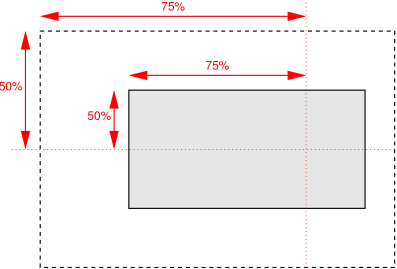

CSS is a language for describing the rendering of structured
documents (such as HTML
and XML) on screen, on paper, in speech, etc.
This draft contains the features of CSS level 3 relating to
borders and backgrounds. It includes and extends the functionality of
CSS level 2 [[!CSS21]], which builds on CSS level 1
[[CSS1]]. The main extensions compared to level 2 are borders
consisting of images, boxes with multiple backgrounds, boxes with
rounded corners and boxes with shadows.
This module replaces two earlier drafts: CSS3 Backgrounds and CSS3
Border.
Status of this document
The following features are at-risk and may be dropped at the
end of the CR period if there has not been enough interest from
implementers: animatability of 'box-shadow'
The CSS WG maintains an issues
list for this module. A test
suite and implementation report for CSS Backgrounds and Borders Level 3
will be developed during the Candidate Recommendation phase, which will last
a minimum of three months, and at least until 25 July 2012. See the
section “CR exit criteria” for more details.
The changes to this specification since the previous drafts are
listed in the “Changes” section.
Introduction
This subsection is not normative.
When elements are rendered according to the
CSS box model [[!CSS21]],
each element is either not displayed at all, or formatted as one
or more rectangular boxes. Each box has a rectangular content
area, a band of padding around the content, a border around the
padding, and a margin outside the border. (The margin may actually be
negative, but margins have no influence on the background and border.)
The various areas and edges of a typical box.
(This diagram is explained in the CSS2.1 Box Model chapter [[!CSS21]].)
The properties of this module deal with the decoration of the border
area and with the background of the content, padding and border areas.
Additionally the box may be given a "drop-shadow" effect with the
'box-shadow' property.
If an element is broken into multiple boxes, 'box-decoration-break' [[CSS3-BREAK]]
defines how the borders and background are divided over the various boxes.
(An element can result in more than one box if it is broken at the
end of a line, at the end of a column or at the end of a page; and
continued in the next line, column or page.)
The relative stacking order of backgrounds, borders, and shadows
is given in this module. For how these layers interact with other
rendered content, see Appendix E “Elaborate description of Stacking
Contexts” in [[!CSS21]].
The <image> value type is defined by this
specification as <image> =
<uri>. Other value types are defined in
CSS Level 2 Revision 1 [[!CSS21]].
Other CSS modules may expand the definitions of these value types: for
example [[CSS3COLOR]], when combined with this module, expands the
definition of the <color> value type as used in this specification.
Similarly, [[CSS3-IMAGES]], when combined with this module,
expands the definition of <image> as used in this specification.
In addition to the property-specific values listed in their definitions,
all properties defined in this specification also accept the
inherit
keyword as their property value. For readability it has not been repeated
explicitly.
Animated Values
It is expected that CSS will include ways to
animate transitions between styles. (The
section “Animation of property types” of the CSS Transitions
module [[CSS3-TRANSITIONS]] is expected to define how different
kinds of values are interpolated during a transition.) In anticipation
of that, this module includes a line “Animatable” for each property,
which specifies whether and how values of the property can be animated.
Backgrounds
Each box has a background layer that may be fully transparent (the
default), or filled with a color and/or one or more images. The background
properties specify what color ('background-color')
and images ('background-image') to use,
and how they are sized, positioned, tiled, etc.
The background properties are not inherited, but the parent box's
background will shine through by default because of the initial
'transparent' value on 'background-color'.
Layering Multiple Background Images
The background of a box can have multiple layers in CSS3. The number
of layers is determined by the number of comma-separated values in the
'background-image' property. Note that a value of 'none' still creates
a layer.
Each of the images is sized, positioned, and tiled according to
the corresponding value in the other background properties. The lists
are matched up from the first value: excess values at the end are not
used. If a property doesn't have enough comma-separated values to match
the number of layers, the UA must calculate its used
value by repeating
the list of values until there are enough.
For example, this set of declarations:
background-image: url(flower.png), url(ball.png), url(grass.png);
background-position: center center, 20% 80%, top left, bottom right;
background-origin: border-box, content-box;
background-repeat: no-repeat;
has exactly the same effect as this set with the extra position
dropped and the missing values for 'background-origin' and
'background-repeat' filled in (emphasized for clarity):
background-image: url(flower.png), url(ball.png), url(grass1.png);
background-position: center center, 20% 80%, top left;
background-origin: border-box, content-box, border-box;
background-repeat: no-repeat, no-repeat, no-repeat;
The first image in the list is the layer closest to the user,
the next one is painted behind the first, and so on. The background
color, if present, is painted below all of the other layers.
Note that the border-image properties
can also define a background image, which, if present, is painted on top of
the background created by the background properties.
This property sets the background image(s) of an element. Images
are drawn with the first specified one on top (closest to the user)
and each subsequent image behind the previous one.
Where
<bg-image> = <image> | none
A value of ''none''
counts as an image layer but draws
nothing. An image that is empty (zero width or zero height), that
fails to download, or that cannot be displayed (e.g., because it is
not in a supported image format) likewise counts as a layer but
draws nothing.
See the section “Layering multiple background
images” for how 'background-image' interacts with other
comma-separated background properties to form each background image
layer.
When setting a background image, authors should also specify a
''background-color'' that will preserve contrast with the text for
when the image is unavailable.
For accessibility reasons, authors should not use background images
as the sole method of conveying important information.
See Web
Content Accessibility Guideline F3 [[WCAG20]]. Images are not
accessible in non-graphical presentations, and background images
specifically might be turned off in high-contrast display modes.
Note that stylistic foreground images can be provided
in CSS with the
content
property. (Semantically-important foreground images should be provided
in the document markup, e.g. with the <img> tag in HTML.)
Media fragments
can be used to display a portion of an image. The
CSS Images module
will provide fallback syntax for image formats and include additional
controls for image display.
Some examples specifying background images:
body { background-image: url("marble.svg") }
p { background-image: none }
div { background-image: url(tl.png), url(tr.png) }
Implementations may optimize by not downloading and
drawing images that are not visible (e.g., because they are behind
other, fully opaque images).
Single values for <repeat-style> have the following
meanings:
''repeat-x''
Computes to ''repeat no-repeat''.
''repeat-y''
Computes to ''no-repeat repeat''.
''repeat''
Computes to ''repeat repeat''.
''space''
Computes to ''space space''
''round''
Computes to ''round round''
''no-repeat''
Computes to ''no-repeat no-repeat''
If a <repeat-style> value has two keywords, the first
one is for the horizontal direction, the second for the vertical one,
as follows:
''repeat''
The image is repeated in this direction as often as needed to cover
the background painting area.
''space''
The image is repeated as often as will fit within the
background positioning area without being
clipped and then the images are spaced out to fill the area. The
first and last images touch the edges of the area. If the background
painting area is larger than the background positioning area, then
the pattern repeats to fill the background painting area.
The value of 'background-position' for this direction
is ignored, unless there is not enough space for two copies of the
image in this direction, in which case only one image is placed and
'background-position' determines its position in this
direction.
''round''
The image is repeated as often as will fit within the
background positioning area. If it doesn't
fit a whole number of times, it is rescaled so that it does.
See the formula under 'background-size'. If the background
painting area is larger than the background positioning area, then
the pattern repeats to fill the background painting area.
''no-repeat''
The image is placed once and not repeated in this direction.
Unless one of the two keywords is ''no-repeat'', the
whole background painting area will be tiled, i.e., not just one
vertical strip and one horizontal strip.
Example(s):
body {
background: white url("pendant.png");
background-repeat: repeat-y;
background-position: center;
}
The effect of ''repeat-y'': One copy
of the background image is centered, and other copies are put above
and below it to make a vertical band behind the element.
Example(s):
body {
background-image: url(dot.png) white;
background-repeat: space
}
The effect of 'space': the image of a dot is
tiled to cover the whole background and the images are equally
spaced.
See the section “Layering multiple background
images” for how 'background-repeat' interacts with other
comma-separated background properties to form each background image
layer.
Affixing Images: the 'background-attachment' property
If background images are specified, this property specifies whether
they are fixed with regard to the viewport
(''fixed'') or scroll along with the element (''scroll'')
or its contents (''local''). The property's value is given as
a comma-separated list of <attachment> keywords where
<attachment> = scroll | fixed | local
fixed
The background is fixed with regard to the viewport. In paged
media where there is no viewport, a ''fixed'' background is fixed
with respect to the page box
and therefore replicated on every page.
Note that there is only one viewport per view.
Even if an element has a scrolling mechanism (see the 'overflow'
property [[!CSS21]]), a ''fixed'' background doesn't move with the
element.
local
The background is fixed with regard to the element's contents:
if the element has a scrolling mechanism,
the background scrolls with the element's contents,
and the background painting area and background positioning area
are relative to the scrollable area of the element rather than to the border framing them.
Because the scrollable area does not include the border area,
for scrollable elements the ''border-box'' value of 'background-clip'
may be treated the same as ''padding-box''.
scroll
The background is fixed with regard to the element itself and
does not scroll with its contents. (It is effectively attached
to the element's border.)
Even if the image is fixed, it is still only visible when it is in
the background painting area of the element or otherwise
unclipped. (See “The backgrounds of
special elements” for the cases when background images are not
clipped.) Thus, unless the image is tiled, it may be invisible.
This example creates an infinite vertical band that remains
“glued” to the viewport when the element is scrolled.
body {
background: red url("pendant.gif");
background-repeat: repeat-y;
background-attachment: fixed;
}
User agents that do not support ''fixed'' backgrounds (for
example due to limitations of the hardware platform) should ignore
declarations with the keyword ''fixed''. For example:
body {
/* For all UAs: */
background: white url(paper.png) scroll;
/* For UAs that do fixed backgrounds: */
background: white url(ledger.png) fixed;
}
h1 {
/* For all UAs: */
background: silver;
/* For UAs that do fixed backgrounds: */
background: url(stripe.png) fixed, white url(ledger.png) fixed;
}
See the section “Layering multiple background
images” for how 'background-attachment' interacts with other
comma-separated background properties to form each background image
layer.
Positioning Images: the 'background-position' property
refer to size of background positioning
areaminus size of background image; see text
Media:
visual
Computed value:
A list, each item consisting of:
a pair of offsets (horizontal and vertical) from the top left origin
each given as a combination of an absolute length and a percentage
If background images have been specified, this property specifies
their initial position (after any resizing)
within their corresponding background positioning area.
Where
<position> = [
[ left | center | right | top | bottom | <length-percentage> ]
|
[ left | center | right | <length-percentage> ]
[ top | center | bottom | <length-percentage> ]
|
[ center | [ left | right ] <length-percentage>? ] &&
[ center | [ top | bottom ] <length-percentage>? ]
]
If only one value is specified, the second value is assumed to be
''center''. If two values are given, a length or percentage as the first
value represents the horizontal position (or offset) and a length or
percentage as the second value represents the vertical position (or
offset). <percentage> and <length>
values here represent an offset of the top left corner
of the background image from the top left corner of the background
positioning area.
Note that a pair of keywords can be reordered while
a combination of keyword and length or percentage cannot.
So ''center left'' is valid while ''50% left'' is not.
If three or four values are given, then
each <percentage> or<length>
represents an offset and must be preceded by a keyword,
which specifies from which edge the offset is given. For example,
''background-position: bottom 10px right 20px'' represents a
''10px'' vertical offset up from the bottom edge and a
''20px'' horizontal offset leftward from the right edge. If
three values are given, the missing offset is assumed to be zero.
Positive values represent an offset inward from the edge of
the background positioning area. Negative values represent an offset
outward from the edge of the background positioning area.
The following declarations give the stated (horizontal, vertical)
offsets from the top left corner:
background-position: left 10px top 15px; /* 10px, 15px */
background-position: left top ; /* 0px, 0px */
background-position: 10px 15px; /* 10px, 15px */
background-position: left 15px; /* 0px, 15px */
background-position: 10px top ; /* 10px, 0px */
background-position: left top 15px; /* 0px, 15px */
background-position: left 10px top ; /* 10px, 0px */
<percentage>
A percentage for the horizontal offset is relative to (width of
background positioning area - width of background image).
A percentage for the vertical offset is relative to (height
of background
positioning area - height of background image), where the
size of the image is the size given by 'background-size'.
For example, with a value pair of ''0% 0%'', the upper left
corner of the image is aligned with the upper left corner of, usually,
the box's padding edge. A value pair of ''100% 100%'' places
the lower right corner of the image in the lower right corner of the
area. With a value pair of ''75% 50%'', the point 75% across
and 50% down the image is to be placed at the point 75% across and 50%
down the area.

Diagram of the meaning of ''background-position: 75% 50%''.
<length>
A length value gives a fixed length as the offset. For example, with a
value pair of ''2cm 1cm'', the upper left corner of the image
is placed 2cm to the right and 1cm below the upper left corner of the
background positioning area.
''top''
Computes to ''0%'' for the vertical position if one or two
values are given, otherwise specifies the top edge as the origin for the
next offset.
''right''
Computes to ''100%'' for the horizontal position if one or two
values are given, otherwise specifies the right edge as the origin
for the next offset.
''bottom''
Computes to ''100%'' for the vertical position if one or two
values are given, otherwise specifies the bottom edge as the origin
for the next offset.
''left''
Computes to ''0%'' for the horizontal position if one or two
values are given, otherwise specifies the left edge as the origin
for the next offset.
''center''
Computes to ''50%'' (''left 50%'') for the
horizontal position if the horizontal position is not otherwise
specified, or ''50%'' (''top 50%'') for the vertical position if
it is.
The following 'background' shorthand declarations use keywords
to set 'background-position' to the stated percentage values.
body { background: url("banner.jpeg") right top } /* 100% 0% */
body { background: url("banner.jpeg") top center } /* 50% 0% */
body { background: url("banner.jpeg") center } /* 50% 50% */
body { background: url("banner.jpeg") bottom } /* 50% 100% */
In the example below, the (single) image is placed in the lower-right
corner of the viewport.
Background positions can also be relative to other corners than the
top left. E.g., the following puts the background image 10px from the
bottom and 3em from the right:
background-position: right 3em bottom 10px
See the section “Layering multiple background
images” for how 'background-position' interacts with
other comma-separated background properties to form each background
image layer.
Determines the background painting area,
which determines the area within which the background is painted.
The syntax of the property is given with
<box> = border-box | padding-box | content-box
Values have the following meanings:
''border-box''
The background is painted within (clipped to) the
border box.
''padding-box''
The background is painted within (clipped to) the
padding box.
''content-box''
The background is painted within (clipped to) the
content box.
Note that the root element has a different background
painting area, and thus the 'background-clip' property has no effect
when specified on it. See “The
backgrounds of special elements.”
Note that the background is always drawn behind
the border, if any. See “Elaborate description of Stacking Contexts” in
[[!CSS21]].
See the section on Corner Shaping
for how 'border-radius' affects the shape of the background painting area.
See the section “Layering multiple background
images” for how ''background-clip'' interacts with other
comma-separated background properties to form each background image
layer.
Positioning Area: the 'background-origin' property
For elements rendered as a single box, specifies the
background positioning area.
For elements rendered as multiple boxes
(e.g., inline boxes on several lines, boxes on several pages),
specifies which boxes 'box-decoration-break' [[CSS3-BREAK]] operates on
to determine the background positioning area(s).
''padding-box''
The position is relative to the padding box. (For single boxes
''0 0'' is the upper left corner of the padding edge,
''100% 100%'' is the lower right corner.)
''border-box''
The position is relative to the border box.
''content-box''
The position is relative to the content box.
If the 'background-attachment' value for this image is
''fixed'', then this property has no effect: in this case the
background positioning area is the
initial containing block [[!CSS21]].
Note that if 'background-clip' is ''padding-box'',
'background-origin' is ''border-box'', 'background-position' is
''top left'' (the initial value), and the element has a
non-zero border, then the top and left of the background image will be
clipped.
See the section “Layering multiple background
images” for how ''background-origin'' interacts with other
comma-separated background properties to form each background image
layer.
Scale the image, while preserving its intrinsic aspect ratio
(if any), to the largest size such that both its width and its
height can fit inside the background
positioning area.
''cover''
Scale the image, while preserving its intrinsic aspect ratio
(if any), to the smallest size such that both its width and its
height can completely cover the background positioning area.
[ <length-percentage>
| auto ]{1,2}
The first value gives the width of the corresponding image,
the second value its height. If only one value is given the second
is assumed to be ''auto''.
A percentage is relative to the background positioning area.
An ''auto'' value for one dimension is resolved by using the
image's intrinsic ratio and the size of the other dimension, or
failing that, using the image's intrinsic size, or failing that,
treating it as 100%.
If both values are ''auto'' then the intrinsic width and/or
height of the image should be used, if any, the missing dimension
(if any) behaving as ''auto'' as described above. If the image has
neither an intrinsic width nor an intrinsic height, its size is
determined as for ''contain''.
Negative values are not allowed.
Here are some examples. The first example stretches the background
image independently in both dimensions to completely cover the content
area:
The second example stretches the image so that exactly two copies
fit horizontally. The aspect ratio is preserved:
p {
background-image: url(tubes.png);
background-size: 50% auto;
background-origin: border-box }
This example forces the background image to be 15 by 15 pixels:
para {
background-size: 15px 15px;
background-image: url(tile.png)}
This example uses the image's intrinsic size. Note that this is the
only possible behavior in CSS level 1 and 2.
body {
background-size: auto; /* default */
background-image: url(flower.png) }
The following example rounds the height of the image to 33.3%, up
from the specified value of 30%. At 30%, three images would fit
entirely and a fourth only partially. After rounding, three images
fit. The width of the image is 20% of the background area width and is
not rounded.
If 'background-repeat' is ''round'' for one (or both) dimensions,
there is a second step. The UA must scale the image in that dimension
(or both dimensions) so that it fits a whole number of times in
the background positioning area. In the case of the width (height is
analogous):
If X ≠ 0 is the width of the image after step one
and W is the width of the background positioning area,
then the rounded width
X' = W / round(W / X)
where round() is a function that returns the nearest natural number
(integer greater than zero).
If 'background-repeat' is ''round'' for one dimension only and if
'background-size' is ''auto'' for the other dimension, then there is a third
step: that other dimension is scaled so that the original aspect ratio
is restored.
In this example the background image is shown at its intrinsic size:
div {
background-image: url(image1.png);
background-repeat: repeat; /* default */
background-size: auto } /* default */
In the following example, the background is shown with a width of
3em and its height is scaled proportionally to keep the original
aspect ratio:
In the following example, the background is shown with a width of
approximately 3em: scaled so that it fits a whole number of times in
the width of the background. The height is scaled proportionally to
keep the original aspect ratio:
div {
background-image: url(image3.png);
background-repeat: round repeat;
background-size: 3em auto }
In the following example, the background image is shown with a
width of 3em and a height that is either the height corresponding to
that width at the original aspect ratio or slightly less:
div {
background-image: url(image4.png);
background-repeat: repeat round;
background-size: 3em auto }
In the following example, the background image is shown with a
height of approximately 4em: scaled slightly so that it fits a whole
number of times in the background height. The width is the approximately
the width that correspond to a 4em height at the original aspect ratio:
scaled slightly so that it fits a whole number of times in the background
width.
div {
background-image: url(image5.png);
background-repeat: round;
background-size: auto 4em }
If the background image's width or height resolves to zero, this
causes the image not to be displayed. (The effect is the same as
if it had been a transparent image.)
See the section “Layering multiple background
images” for how 'background-size' interacts with other
comma-separated background properties to form each background image
layer.
Note that a color is permitted in
<final-bg-layer>, but not in <bg-layer>.
The 'background' property is a
shorthand property for setting most background properties at the same
place in the style sheet. The number of comma-separated items defines
the number of background layers. Given a valid declaration, for each layer
the shorthand first sets the corresponding layer of each of
'background-image',
'background-position',
'background-size',
'background-repeat',
'background-origin',
'background-clip'
and 'background-attachment' to
that property's initial value, then assigns any explicit values specified
for this layer in the declaration. Finally 'background-color' is set to
the specified color, if any, else set to its initial value.
If one <box> value is present then it sets
both 'background-origin' and 'background-clip' to that value.
If two values are present, then the first sets 'background-origin'
and the second 'background-clip'.
Examples:
In the first rule of the following example, only a value for
'background-color' has been given and the
other individual properties are set to their initial values. In the
second rule, many individual properties have been specified.
body { background: red }
p { background: url("chess.png") 40% / 10em gray
round fixed border-box; }
The following example shows how a both a background color (#CCC) and a background image (url(metal.jpg)) are set. The image is rescaled to
the full width of the element:
E { background: #CCC url("metal.jpg") top left / 100% auto no-repeat}
Another example shows equivalence:
div { background: padding-box url(paper.jpg) white center }
div {
background-color: white;
background-image: url(paper.jpg);
background-repeat: repeat;
background-attachment: scroll;
background-position: center;
background-clip: padding-box;
background-origin: padding-box;
background-size: auto auto }
The following declaration with multiple, comma-separated values
background: url(a.png) top left no-repeat,
url(b.png) center / 100% 100% no-repeat,
url(c.png) white;
is equivalent to
background-image: url(a.png), url(b.png), url(c.png);
background-position: top left, center, top left;
background-repeat: no-repeat, no-repeat, repeat;
background-clip: border-box, border-box, border-box;
background-origin: padding-box, padding-box, padding-box;
background-size: auto auto, 100% 100%, auto auto;
background-attachment: scroll, scroll, scroll;
background-color: white;
Backgrounds of Special Elements
The document canvas
is the infinite surface over which the document is rendered. [[!CSS21]]
Since no element corresponds to the canvas,
in order to allow styling of the canvas
CSS propagates the background of the root element
(or, in the case of HTML, the <body> element)
as described below.
However, if no boxes are generated for the element whose background
would be used for the canvas
(for example, if the root element has ''display: none''),
then the canvas background is transparent.
Note that an element might be invisible, but still generate boxes.
For example, if the element has ''visibility: hidden'' but not ''display: none'',
boxes are generated for it and its background is used for the canvas.
If the canvas background is not opaque, what shows through is UA-dependent.
The Canvas Background and the Root Element
The background of the root element becomes the background of the
canvas
and its background painting area extends
to cover the entire canvas.
However, any images are sized and positioned relative to the root element
as if they were painted for that element alone.
(In other words, the
background positioning area
is determined as for the root element.)
The root element does not paint this background again, i.e., the used
value of its background is transparent.
The Canvas Background and the HTML <body> Element
For documents whose root element is an HTML HTML
element [[!HTML401]] or an XHTML html
element [[!XHTML11]]: if the computed
value of 'background-image' on the root element is ''none'' and its
'background-color' is ''transparent'', user agents must instead propagate
the computed values of the background properties from that element's first
HTML BODY or XHTML body
child element. The used values of that BODY element's
background properties are their initial values, and the propagated values
are treated as if they were specified on the root element.
It is recommended that authors of HTML documents specify the canvas background
for the BODY element rather than the
HTML element.
According to these rules, the canvas underlying the following HTML
document will have a “marble” background:
<!DOCTYPE html PUBLIC '-//W3C//DTD HTML 4.0//EN'
>
<html>
<head>
<title>Setting the canvas background</title>
<style type="text/css">
body { background: url("http://example.org/marble.png") }
</style>
</head>
<body>
<p>My background is marble.</p>
</body>
</html>
The ''::first-line'' Pseudo-element‘s Background
The ''::first-line'' pseudo-element is like an inline-level element
for the purposes of the background (see section 5.12.1 of [[!CSS21]]).
That means, e.g., that in a left-justified first line, the background
does not necessarily extend all the way to the right margin.
Borders
The border can either be a predefined style (solid line, double
line, dotted line, pseudo-3D border, etc.) or it can be an image. In
the former case, various properties define the style ('border-style'),
color ('border-color'), and thickness ('border-width') of the border.
These properties set the foreground color of the border specified
by the border-style properties.
'Border-color' is a shorthand for the
four 'border-*-color' properties. The four values set the top, right,
bottom and left border, respectively. A missing left is the same as
right, a missing bottom is the same as top, and a missing right is
also the same as top.
These properties set the style of the border, unless there is a
border image
'Border-style' is a shorthand for the
other four. Its four values set the top, right, bottom and left border
respectively. A missing left is the same as right, a missing bottom is
the same as top, and a missing right is also the same as top.
No border. Color and width are ignored (i.e., the border has width 0).
Note this means that the initial value of 'border-image-width' will also resolve to zero.
''hidden''
Same as 'none', but has different behavior in the border conflict
resolution rules for border-collapsed tables [[!CSS21]].
''dotted''
A series of round dots.
''dashed''
A series of square-ended dashes.
''solid''
A single line segment.
''double''
Two parallel solid lines with some space between them. (The
thickness of the lines is not specified, but the sum of the lines
and the space must equal
'border-width'.)
''groove''
Looks as if it were carved in the canvas. (This is typically
achieved by creating a “shadow” from two colors that are
slightly lighter and darker than the
'border-color'.)
''ridge''
Looks as if it were coming out of the canvas.
''inset''
Looks as if the content on the inside of the border is sunken into the canvas.
Treated as 'ridge' in the
collapsing border model. [[!CSS21]]
''outset''
Looks as if the content on the inside of the border is coming out of
the canvas.
Treated as 'groove' in the
collapsing border model. [[!CSS21]]
Borders are drawn in front of the element's background, but behind
the element's content (in case it overlaps).
Example renderings of the predefined border styles.
Note: Border colors close to black or white
may need different color calculations than colors in between
in order to create the required “3D” effect
of ''groove'', ''ridge'', ''inset'', or ''outset''.
Note: There is no control over the spacing of the dots
and dashes, nor over the length of the dashes. Implementations are
encouraged to choose a spacing that makes the corners symmetrical.
Note: This specification does not define how borders
of different styles should be joined in the corner. Also note that
rounded corners may cause the corners and the contents to overlap, if
the padding is less than the radius of the corner.
These properties set the thickness of the border.
Where
<line-width> = <length> | thin | medium | thick
The lengths corresponding to ''thin'', ''medium'' and
''thick'' are not specified, but the values are constant throughout a
document and thin ≤ medium ≤ thick. A UA could,
e.g., make the thickness depend on the ''medium'' font size: one
choice might be 1, 3 & 5px when the 'medium' font size is 17px or
less. Negative <length> values are not allowed.
'Border-width' is a shorthand that sets the
four 'border-*-width' properties. If it has four values, they set top, right,
bottom and left in that order. If left is missing, it is the same as right;
if bottom is missing, it is the same as top; if right is missing, it is the
same as top.
Note that the initial width is 'medium', but the initial
style is 'none' and therefore the used width is 0.
When the used width of the border is 0, we say that the border is
absent.
This is a shorthand property for setting the width, style, and
color of the top, right, bottom, and left border of a box. Omitted
values are set to their initial values.
The 'border' property is a shorthand property for setting the same width,
color, and style for all four borders of a box. Unlike the shorthand 'margin'
and 'padding' properties, the 'border' property cannot set different values
on the four borders. To do so, one or more of the other border properties must
be used.
The 'border' shorthand also resets 'border-image' to its initial value.
It is therefore recommended that authors use the 'border' shorthand, rather
than other shorthands or the individual properties, to override any border
settings earlier in the cascade. This will ensure that 'border-image' has
also been reset to allow the new styles to take effect.
The CSS Working Group intends for the 'border' shorthand to
reset all border properties in future levels of CSS as well. For example, if a
'border-characters' property is introduced in the future to allow glyphs as
borders, it will also be reset by the 'border' shorthand. By using the 'border'
shorthand to reset borders, authors can be guaranteed a “blank canvas” no
matter what properties are introduced in the future.
For example, the first rule below is equivalent to the set of five
rules shown after it:
p { border: solid red }
p {
border-top: solid red;
border-right: solid red;
border-bottom: solid red;
border-left: solid red;
border-image: none;
}
Since, to some extent, the properties have overlapping
functionality, the order in which the rules are specified is
important.
Consider this example:
blockquote {
border-color: red;
border-left: double;
color: black
}
In the above example, the color of the left border is black, while
the other borders are red. This is due to
'border-left' setting the width, style, and
color. Since the color value is not given by the
'border-left' property, it will be taken from
the 'color' property. The fact that the
'color' property is set after the
'border-left' property is not relevant.
Refer to corresponding dimension of the
border box.
Media:
visual
Computed value:
see individual properties
Animatable:
see individual properties
The two length or percentage values of the 'border-*-radius'
properties define the radii of a quarter ellipse that defines the
shape of the corner of the outer border edge (see the diagram below).
The first value is the horizontal radius, the second the vertical
radius. If the second value is omitted it is copied from the first.
If either length is zero, the corner is square, not rounded.
Percentages for the horizontal radius refer to the width of the
border box, whereas percentages for the vertical radius refer to
the height of the border box. Negative values are not allowed.
The two values of
''border-top-left-radius: 55pt 25pt'' define the
curvature of the corner.
This example draws ovals of 15em wide and 10em high:
The 'border-radius' shorthand sets all four 'border-*-radius'
properties. If values are given before and after the slash, then
the values before the slash set the horizontal radius and the values
after the slash set the vertical radius. If there is no slash, then the
values set both radii equally. The four values for each radii are
given in the order top-left, top-right, bottom-right, bottom-left.
If bottom-left is omitted it is the same as top-right. If
bottom-right is omitted it is the same as top-left. If top-right is
omitted it is the same as top-left.
The padding edge (inner border) radius is the outer border radius
minus the corresponding border thickness. In the case where this results
in a negative value, the inner radius is zero. (In such cases its center
might not coincide with that of the outer border curve.) Likewise the
content edge radius is the padding edge radius minus the corresponding
padding, or if that is negative, zero. The border and padding thicknesses
in the curved region are thus interpolated from the adjoining sides, and
when two adjoining borders are of different thicknesses the corner will
show a smooth transition between the thicker and thinner borders.
All border styles (''solid'', ''dotted'', ''inset'', etc.)
follow the curve of the border.
The effect of a rounded corner when the two borders
it connects are of unequal thickness (left) and the effect of a
rounded corner on borders that are thicker than the radius of the
corner (right).
Note that if the center of a corner's outer curve is past an
opposite padding edge (in the border area of a side opposite the corner),
the inner curve will not be a full quarter ellipse.
Where the border-radius curve extends into the opposite
sides' borders, the arc of the padding edge is less than 90°.
The margin edge, being outside the border edge, calculates its radius
by adding the corresponding margin thickness to each border radius.
However, in order to create a sharper corner when the border radius is small,
when the border radius is less than the margin,
the margin is multiplied by the proportion 1 + (r-1)3,
where r is the ratio of the border radius to the margin,
in calculating the corner radii of the margin box shape.
Corner Clipping
A box's backgrounds, but not its border-image,
are clipped to the appropriate curve (as determined by 'background-clip').
Other effects that clip to the border or padding edge (such as 'overflow'
other than ''visible'') also must clip to the curve. The content of
replaced elements is always trimmed to the content edge curve.
Also, the area outside the curve of the border edge does not
accept pointer events on behalf of the element.
As 'border-radius' reduces the interactive area of an element
authors should make sure the remaining interactive area conforms
to recommended minima for the platforms they target;
in particular, conforming to recommended minimum touch target sizes
may require larger widths and heights when 'border-radius' is used.
This example adds appropriate padding, so that the
contents do not overflow the corners. Note that there is no border,
but the background will still have rounded corners.
Color and style transitions must be contained within the segment of
the border that intersects the smallest rectangle that contains both
border radii as well as the center of the inner curve (which may be a
point representing the corner of the padding edge, if the border radii
are smaller than the border-width).
If one of these borders is zero-width, then the other border takes
up the entire transitional area. Otherwise,
the center of color and style transitions between adjoining borders
is a point along the curve that is a continuous monotonic function
of the ratio of the border widths. However it is not defined what these
transitions look like or what function maps from this ratio to a point
on the curve.
Given these corner shapes, color and style transitions
must be contained within the green region. In case D the rectangle
defined by the border radii does not include the center of the inner
curve (which is a sharp corner), so the transition region is expanded
to include that corner. Transitions may take up the entire transition
region, but are not required to: For example, a gradient color transition
between two solid border styles might take up only the region bounded
by the tips of the outer radii and the tips of the inner radii
(represented in case D by the dark green region).
Overlapping Curves
Corner curves must not overlap: When the sum of any two adjacent border
radii exceeds the size of the border box, UAs must proportionally reduce
the used values of all border radii until none of them overlap. The algorithm
for reducing radii is as follows:
Let f = min(Li/Si),
where i ∈ {top, right, bottom, left},
Si is the sum of the two corresponding radii of the
corners on side i, and Ltop =
Lbottom = the width of the box, and
Lleft = Lright = the
height of the box. If f < 1, then all corner radii are
reduced by multiplying them by f.
Note that this formula ensures that quarter circles
remain quarter circles and large radii remain larger than smaller
ones, but it may reduce corners that were already small enough, which
may make borders of nearby elements that should look the same look
different.
If the curve interferes with UI elements such as scrollbars, the UA
may further reduce the used value of the affected border radii (and
only the affected border radii) as much as necessary, but no more.
For example, the borders A of the figure below might be the
result of
all corners need to be reduced by a factor 0.8 to make
them fit. The used border radii thus are 0.4em (instead of 0.5em) and
1.6em (instead of 2em). See borders B in the figure.
These rounded corner might be the result of 'width:
6em; height: 2.5em; border-radius: 0.5em 2em 0.5em 2em' for A; and
ditto but with 'height: 2em' for B.
Effect on Tables
The 'border-radius' properties do apply to ''table'' and ''inline-table''
elements. When 'border-collapse' is ''collapse'', the UA may apply the
border-radius properties to ''table'' and ''inline-table'' elements, but
is not required to. In this case not only must the border radii of adjacent
corners not intersect, but the horizontal and vertical radii of a single
corner must not extend past the far border edges of the cell at that
corner (i.e. a table corner's border-radius does not affect cells not
at that corner). If the computed values of the border radii would cause
this effect, then the used values of all the border radii of the table
must be reduced by the same factor so that the radii neither intersect
nor extend past the border edges of their respective corner cells.
The effect of border-radius on internal
table elements is undefined in CSS3 Backgrounds and Borders, but may
be defined in a future specification. CSS3 UAs should ignore
border-radius properties applied to internal table elements when
'border-collapse' is ''collapse''.
Border Images
Authors can specify an image to be used in place of the border styles.
In this case, the border's design is taken from the sides and corners
of an image specified with 'border-image-source', whose pieces may be
sliced, scaled and stretched in various ways to fit the size of the
border image area. The border-image properties do not affect layout:
layout of the box, its content, and surrounding content is based on
the 'border-width' and 'border-style' properties only.
This example creates a top and bottom border consisting of a whole
number of orange diamonds and a left and right border of a single,
stretched diamond. The corners are diamonds of a different color. The
image to tile is as follows. Apart from the diamonds, it is
transparent:
The image is 81 by 81 pixels and has to be divided into 9 equal
parts. The style rules could thus be as follows:
The result, when applied to a DIV of 12 by 5em, will be similar to
this:
This shows a more complicated example, demonstrating how the border
image corresponds to the fallback border-style but can also extend
beyond the border area. The border image is a wavy green border with
an extended corner effect:
The 'border-image-source' image, with the four
'border-image-slice' cuts at 124px dividing the image into nine parts.
The rest of the border properties then interact to lay out the
tiles as follows:
Diagram of all border-image properties and how they
interact, and showing the rendering with and without the border-image
in effect.
Here, even though the border-width is 12px, the 'border-image-width'
property computes to 124px. The border-image area is then outset 31px
from the border-box and into the margin area. If the border-image fails
to load (or border images are not supported by the UA), the fallback
rendering uses a green double border.
Notice that the 'border' shorthand resets 'border-image'. This makes
it easy to turn off or reset all border effects:
.notebox {
border: double orange;
/* must set 'border' shorthand first, otherwise it erases 'border-image' */
border-image: url("border.png") 30 round;
/* but other 'border' properties can be set after */
border-width: thin thick;
}
...
.sidebar .notebox {
box-shadow: 0 0 5px gray;
border-radius: 5px;
border: none; /* turn off all borders */
/* 'border' shorthand resets 'border-image' */
}
All elements, except internal table elements when 'border-collapse' is
''collapse''
Inherited:
no
Percentages:
N/A
Media:
visual
Computed value:
''none'' or the image with its URI made absolute
Animatable:
no
Specifies an image to use in place of the rendering specified by the 'border-style' properties
and, if given the ''fill'' keyword in 'border-image-slice', as an additional image backdrop for the element.
If the value is ''none'' or if the image cannot be displayed
(or the property doesn't apply), the border styles will be used;
otherwise the element's 'border-style' borders are not drawn
and the border image is drawn as described in the sections below.
All elements, except internal table elements when 'border-collapse' is
''collapse''
Inherited:
no
Percentages:
refer to size of the border image
Media:
visual
Computed value:
as four values, each a number or percentage, and optionally a ''fill'' keyword
Animatable:
no
This property specifies inward offsets from the top, right, bottom,
and left edges of the image, dividing it into nine regions: four corners,
four edges and a middle.
The middle image part is discarded (treated as fully transparent)
unless the ''fill'' keyword is present. (It is drawn over the background;
see Drawing the Border Image.)
When four values are specified, they set the offsets on the top,
right, bottom and left sides in that order. If the left is missing, it is
the same as the right; if the bottom is missing, it is the same as the top;
if the right is missing, it is the same as the top.
<percentage>
Percentages are relative to the size of the image: the width
of the image for the horizontal offsets, the height for vertical
offsets.
<number>
Numbers represent pixels in the image (if the image is a raster
image) or vector coordinates (if the image is a vector image).
''fill''
The ''fill'' keyword, if present, causes the middle part of
the border-image to be preserved. (By default it is discarded,
i.e., treated as empty.)
Negative values are invalid.
Computed values larger than the size of the image are interpreted as ''100%''.
The regions given by the 'border-image-slice' values may overlap.
However if the sum of the right and left widths is equal to or
greater than the width of the image, the images for the top and
bottom edge and the middle part are empty, which has the same effect
as if a nonempty transparent image had been specified for those
parts. Analogously for the top and bottom values.
If the image must be sized to determine the slices
(for example, for SVG images with no intrinsic size),
then it is sized using the default sizing algorithm
with no specified size and the border image area as the default object size.
Diagram illustrating the cuts corresponding to the
value ''25% 30% 12% 20%''
All elements, except table elements when 'border-collapse' is
''collapse''
Inherited:
no
Percentages:
Relative to width/height of the border image area
Media:
visual
Computed value:
four values, each a percentage, number, ''auto'' keyword, or <length> made absolute
Animatable:
no
The border image is drawn inside an area called the
border image area. This is an area whose boundaries
by default correspond to the border box, see 'border-image-outset'.
The four values of 'border-image-width' specify offsets that are used
to divide the border image area into nine parts. They represent inward
distances from the the top, right, bottom, and left sides of the
area, respectively. If the left width is missing, it is the same as the right;
if the bottom is missing, it is the same as the top; if the right is missing,
it is the same as the top. Values have the following meanings:
<percentage>
Percentages refer to the size of the border image area: the width of the
area for horizontal offsets, the height for vertical offsets.
<number>
Numbers represent multiples of the corresponding computed
border-width.
''auto''
If ''auto'' is specified then the border image width is the
intrinsic width or height (whichever is applicable) of the
corresponding image slice (see 'border-image-slice'). If the image
does not have the required intrinsic dimension then the
corresponding computed border-width is used
instead.
Negative values are not allowed for any 'border-image-width' values.
If two opposite 'border-image-width' offsets are large enough that
they overlap, then the used values of all 'border-image-width' offsets
are proportionally reduced until they no longer overlap. In mathematical
notation: Given Lwidth as the width of the border
image area, Lheight as its height, and
Wside as the border image width offset
for the side side, let f =
min(Lwidth/(Wleft+Wright),
Lheight/(Wtop+Wbottom)).
If f < 1, then all W are reduced by multiplying
them by f.
All elements, except internal table elements when 'border-collapse' is
''collapse''
Inherited:
no
Percentages:
N/A
Media:
visual
Computed value:
four values, each a number or <length> made absolute
Animatable:
no
The values specify the amount by which the border image area extends beyond the border box.
If it has four values, they set the outsets on the top, right, bottom and
left sides in that order. If the left is missing, it is the same as the right;
if the bottom is missing, it is the same as the top; if the right is missing,
it is the same as the top.
<length>
Represents an outset of the specified length.
Negative values are invalid.
<number>
Represents an outset of the specified multiple of the corresponding computed border-width.
Negative values are invalid.
Portions of the border-image that are rendered outside the border
box do not trigger scrolling. Also such portions are invisible to mouse
events and do not capture such events on behalf of the element.
Note that, even though they never cause a scrolling
mechanism, outset images may still be clipped by an ancestor or by the
viewport.
All elements, except internal table elements when 'border-collapse' is
''collapse''
Inherited:
no
Percentages:
N/A
Media:
visual
Computed value:
two keywords, one for each axis
Animatable:
no
This property specifies how the images for the sides and the middle
part of the border image are scaled and tiled. The first keyword applies
to the horizontal sides, the second to the vertical ones; see
Drawing the Border Image.
If the second keyword is absent, it is assumed to be the same as the first.
Values have the following meanings:
''stretch''
The image is stretched to fill the area.
''repeat''
The image is tiled (repeated) to fill the area.
''round''
The image is tiled (repeated) to fill the area. If it does not
fill the area with a whole number of tiles, the image is rescaled
so that it does.
''space''
The image is tiled (repeated) to fill the area. If it does not
fill the area with a whole number of tiles, the extra space is
distributed around the tiles.
The exact process for scaling and tiling the border-image parts is
given in the section below.
Drawing the Border Image
After the border-image given by 'border-image-source' is sliced by
the 'border-image-slice' values, the resulting nine images are scaled,
positioned, and tiled into their corresponding border image regions
in four steps:
Scale to 'border-image-width'.
The two images for the top and bottom edges are made as tall
as the top and bottom border image area parts, respectively, and
their width is scaled proportionally.
The images for the left and right edge are made as wide as the
left and right border image area parts, respectively, and their
height is scaled proportionally.
The corner images are scaled to be as wide and as tall as the
two border-image edges they are part of.
The middle image's width is scaled by the same factor as the top
image unless that factor is zero or infinity, in which case the scaling
factor of the bottom is substituted, and failing that, the width is not
scaled. The height of the middle image is scaled by the same factor as
the left image unless that factor is zero or infinity, in which case the
scaling factor of the right image is substituted, and failing that, the
height is not scaled.
Scale to 'border-image-repeat'.
If the first keyword is ''stretch'', the top, middle and bottom
images are further scaled to be as wide as the middle part of the
border image area. The height is not changed any further.
If the first keyword is ''round'', the top, middle and bottom
images are resized in width, so that exactly a whole number of them
fit in the middle part of the border-image area, exactly as for
''round'' in the 'background-repeat' property.
If the first keyword is ''repeat'' or ''space'', the top, middle,
and bottom images are not changed any further.
The effects of ''stretch'', ''round'', ''repeat'', and ''space''
for the second keyword are analogous, acting on the height of the left,
middle and right images.
Position the first tile.
If the first keyword is ''repeat'', the top, middle, and bottom
images are centered horizontally in their respective areas. Otherwise
the images are placed at the left edge of their respective parts
of the border-image area.
If the second keyword is ''repeat'', the left, middle, and right
images are centered vertically in their respective areas. Otherwise
the images are placed at the top edge of their respective parts
of the border-image area.
Tile and draw.
The images are then tiled to fill their respective areas. All
images are drawn at the same stacking level as normal borders:
immediately in front of the background layers.
In the case of ''space'', any partial tiles are discarded and
the extra space distributed before, after, and between the tiles.
(I.e. the gap before the first tile, the gap after the last tile,
and the gaps between tiles are equalized.)
This can result in empty border-image side areas.
Border Image Shorthand: the 'border-image' property
This is a shorthand property for setting 'border-image-source',
'border-image-slice', 'border-image-width', 'border-image-outset' and
'border-image-repeat'. Omitted values are set to their initial values.
Effect on Tables
The 'border-image' properties apply to the border of tables and
inline tables that have 'border-collapse' set to
''collapse''. However, this specification does not define how such an
image border is rendered. In particular, it does not define how the
image border interacts with the borders of cells, rows and row groups
at the edges of the table (see border conflict resolution in [[!CSS21]]).
It is expected that a future specification will define the
rendering. It is recommended that UAs do not apply border images to
tables with collapsed borders until then.
Miscellaneous Effects
The 'box-decoration-break' property,
which defines how backgrounds and borders apply to a fragmented box,
has been moved to the CSS Fragmentation Module. [[CSS3-BREAK]]
The 'box-shadow' property attaches one or more drop-shadows to the box.
The property accepts either
the ''none'' value, which indicates no shadows,
or a comma-separated list of shadows, ordered front to back.
Each shadow is given as a <shadow>,
represented by 2-4 length values, an optional color, and an optional ''inset'' keyword.
Omitted lengths are 0; omitted colors default to the value of the 'color' property.
<shadow> = inset? && <length>{2,4} && <color>?
The components of each <shadow> are interpreted as follows:
1st <length>
Specifies the horizontal offset of the shadow.
A positive value draws a shadow that is offset to the right of the box,
a negative length to the left.
2nd <length>
Specifies the vertical offset of the shadow.
A positive value offsets the shadow down, a negative one up.
3rd <length>
Specifies the blur radius.
Negative values are not allowed.
If the blur value is zero, the shadow’s edge is sharp.
Otherwise, the larger the value, the more the shadow’s edge is blurred.
See Shadow Blurring, below.
4th <length>
Specifies the spread distance.
Positive values cause the shadow to expand in all directions by the specified radius.
Negative values cause the shadow to contract.
See Shadow Shape, below.
Note that for inner shadows,
expanding the shadow (creating more shadow area)
means contracting the shadow’s perimeter shape.
<color>
Specifies the color of the shadow.
If the color is absent, the used color is taken from the 'color' property.
''inset''
If present, the ''inset'' keyword changes the drop shadow
from an outer box-shadow
(one that shadows the box onto the canvas, as if it were lifted above the canvas)
to an inner box-shadow
(one that shadows the canvas onto the box, as if the box were cut out of the canvas and shifted behind it).
The example below demonstrates the effects of spread and blur on the shadow:
An outer box-shadow casts a shadow as if the border-box of the element were opaque.
Assuming a spread distance of zero, its perimeter has the exact same size and shape as the border box.
The shadow is drawn outside the border edge only:
it is clipped inside the border-box of the element.
An inner box-shadow casts a shadow as if everything outside the padding edge were opaque.
Assuming a spread distance of zero, its perimeter has the exact same size and shape as the padding box.
The shadow is drawn inside the padding edge only:
it is clipped outside the padding box of the element.
If a spread distance is defined, the shadow perimenter defined above
is expanded outward (for outer box-shadows) or contracted inward (for inner box-shadows)
by outsetting (insetting, for inner shadows) the shadow's straight edges by the spread distance
(and flooring the resulting width/height at zero).
Below are some examples of an orange box with a blue border being
given a drop shadow.
To preserve the box's shape when spread is applied,
the corner radii of the shadow are also increased (decreased, for inner shadows)
from the border-box radii by adding the spread distance (and flooring at zero).
However, in order to create a sharper corner when the border radius is small,
when the border radius is less than the spread distance,
the spread distance is multiplied by the proportion 1 + (r-1)3,
where r is the ratio of the border radius to the spread distance,
in calculating the corner radii of the spread shadow shape.
For example, if the border radius is 10px and the spread distance is 20px (r = .5),
the corner radius of the shadow shape will be 10px + 20px × (1 + (.5 - 1)3) = 27.5px.
This adjustment is applied independently to the radii in each dimension.
The 'border-image' does not affect the shape of the box-shadow.
Blurring Shadow Edges
A non-zero blur radius indicates that the resulting shadow should
be blurred, such as by a Gaussian filter. The exact algorithm is not
defined; however the resulting shadow must approximate (with each pixel
being within 5% of its expected value) the image that would be generated
by applying to the shadow a Gaussian blur with a standard deviation equal
to half the blur radius
Note this means for a long, straight shadow edge, the
blur radius will create a visibly apparent color transition approximately
the twice length of the blur radius that is perpendicular to and centered
on the shadow's edge, and that ranges from almost the full shadow color at the
endpoint inside the shadow to almost fully transparent at the endpoint outside it.
Layering, Layout, and Other Details
The shadow effects are applied front-to-back:
the first shadow is on top and the others are layered behind.
Shadows do not influence layout and may overlap other boxes or their shadows.
In terms of stacking contexts and the painting order,
the outer box-shadows of an element are drawn immediately below the background of that element,
and the inner shadows of an element are drawn immediately above the background of that element
(below the borders and border image, if any).
If an element has multiple boxes, all of them get drop shadows,
but shadows are only drawn where borders would also be drawn;
see 'box-decoration-break'.
Shadows do not trigger scrolling or increase the size of the scrollable area.
Outer shadows have no effect on internal table elements in the collapsing border model.
If a shadow is defined for single border edge in the collapsing border model
that has multiple border thicknesses
(e.g. an outer shadow on a table where one row has thicker borders than the others,
or an inner shadow on a rowspanning table cell that adjoins cells with different border thicknesses),
the exact position and rendering of its shadows are undefined
Definitions
Glossary
The following terms and abbreviations are used in this
module.
UA
User Agent
A program that reads and/or writes CSS style sheets on behalf of a
user in either or both of these categories: programs whose purpose is
to render documents (e.g., browsers) and
programs whose purpose is to create style sheets (e.g., editors). A UA
may fall into both categories. (There are other programs that read or
write style sheets, but this module gives no rules for them.)
document
A tree-structured document with elements and attributes, such as an
SGML or XML document [[XML11]].
Conformance requirements are expressed with a combination of
descriptive assertions and RFC 2119 terminology. The key words “MUST”,
“MUST NOT”, “REQUIRED”, “SHALL”, “SHALL NOT”, “SHOULD”, “SHOULD NOT”,
“RECOMMENDED”, “MAY”, and “OPTIONAL” in the normative parts of this
document are to be interpreted as described in RFC 2119.
However, for readability, these words do not appear in all uppercase
letters in this specification. All of the text of this specification is
normative except sections explicitly marked as non-normative, examples,
and notes. [[!RFC2119]]
Examples in this specification are introduced with the words “for example”
or are set apart from the normative text with class="example",
like this:
This is an example of an informative example.
Informative notes begin with the word “Note” and are set apart from the
normative text with class="note", like this:
Note, this is an informative note.
Conformance to CSS Backgrounds and Borders Level 3 is defined
for three classes:
A UA that interprets the semantics of a style sheet and renders
documents that use them.
authoring tool
A UA that writes a style sheet.
A style sheet is conformant to CSS Backgrounds and Borders Level 3
if all of its declarations that use properties defined in this module
have values that are valid according to the generic CSS grammar and the
individual grammars of each property as given in this module.
A renderer is conformant to CSS Backgrounds and Borders Level 3
if, in addition to interpreting the style sheet as defined by the
appropriate specifications, it supports all the properties defined
by CSS Backgrounds and Borders Level 3 by parsing them correctly
and rendering the document accordingly. However the inability of a
UA to correctly render a document due to limitations of the device
does not make the UA non-conformant. (For example, a UA is not
required to render color on a monochrome monitor.)
An authoring tool is conformant to CSS Backgrounds and Borders
Level 3 if it writes syntactically correct style sheets, according
to the generic CSS grammar and the individual grammars of each
property in this module.
Levels
This section is informative. CSS has different levels of
features, each a subset of the other. (See [[CSS-2010]] for a full
explanation.) The lists below describe which features from this
specification are in each level.
Level 1
'background-color'
'background-image' only one image (no layers)
'background-repeat': only 'repeat' | 'repeat-x' | 'repeat-y' | 'no-repeat'
'background-attachment': only 'scroll' | 'fixed'
'background-position': only one or two values allowed
'background' shorthand: only color, image, repeat, attachment and position
'border-color' properties
'border-style' properties
'border-width' properties
'border-top', 'border-bottom', 'border-right', 'border-left', and 'border' shorthands
Level 2
'background-color'
'background-image': only one image (no layers)
'background-repeat': only 'repeat' | 'repeat-x' | 'repeat-y' | 'no-repeat'
'background-attachment': only 'scroll' | 'fixed'
'background-position': only one or two values allowed
'background': only color, image, repeat, attachment and position
'border-color' properties
'border-style' properties
'border-width' properties
'border-top', 'border-bottom', 'border-right', 'border-left', and 'border' shorthands
Level 3
All features described in the CSS Backgrounds and Borders Module Level 3
CR Exit Criteria
As described in the W3C process document, a Candidate
Recommendation (CR) is a specification that W3C recommends for use
on the Web. The next stage is “Recommendation,” when the
specification is sufficiently implemented.
For this specification to be proposed as a W3C Recommendation, the
following conditions shall be met. There must be at least two
independent, interoperable implementations of each feature. Each
feature may be implemented by a different set of products, there is no
requirement that all features be implemented by a single product. For
the purposes of this criterion, we define the following terms:
independent
each implementation must be developed by a
different party and cannot share, reuse, or derive from code
used by another qualifying implementation. Sections of code that
have no bearing on the implementation of this specification are
exempt from this requirement.
interoperable
passing the respective test case(s) in the
official CSS test suite, or, if the implementation is not a Web
browser, an equivalent test. Every relevant test in the test
suite should have an equivalent test created if such a user
agent (UA) is to be used to claim interoperability. In addition
if such a UA is to be used to claim interoperability, then there
must one or more additional UAs which can also pass those
equivalent tests in the same way for the purpose of
interoperability. The equivalent tests must be made publicly
available for the purposes of peer review.
implementation
a user agent which:
implements the specification.
is available to the general public. The implementation may
be a shipping product or other publicly available version
(i.e., beta version, preview release, or “nightly build”).
Non-shipping product releases must have implemented the
feature(s) for a period of at least one month in order to
demonstrate stability.
is not experimental (i.e., a version specifically designed
to pass the test suite and is not intended for normal usage
going forward).
A minimum of three months of the CR period must have elapsed. This
is to ensure that enough time is given for any remaining major errors
to be caught.
Features will be dropped if two or more interoperable
implementations are not found by the end of the CR period.
Features may/will also be dropped if adequate/sufficient (by
judgment of CSS WG) tests have not been produced for those feature(s)
by the end of the CR period.
Changes
Changes since the 9 September 2014 Candidate Recommendation
Added missing definition of ''box-shadow: none''.
(Apparently this was obvious enough that nobody noticed it was missing until now.)
Moved <'background-color'> component of <final-bg-layer> to the front for serialization
because some authors seem to expect this even though it makes less sense?
Changes since the 4 February 2014 Last Call Working Draft
Allow <'background-clip'> and <'background-origin'>
to be separated by other component values in the 'background' shorthand,
since this is what is implemented.
Allow <color> and ''inset'' to be interleaved in any order in 'box-shadow',
since they are not ambiguous and CSS generally allows variant ordering where not ambiguous.
Define gradually increasing corner radius formula for 'box-shadow' spread curvature
to create continuity between sharp corners ('border-radius' = 0)
and curved corners ('border-radius' > spread distance).
This also gives better results for all intermediate states.
Add definition for how the margin edge is curved in response to border-radius.
(This is relevant for [[CSS-SHAPES]], but does not change conformance to CSS Backgrounds and Borders Level 3.)
Removed 'box-decoration-break'; it is now part of [[CSS3-BREAK]].
Tighten up the definition of spread for 'box-shadow'.
Clarify that a 'border-style' of ''none'' also implies an initial 'border-image-width' of zero
(since 'border-image-width' is initially set to the computed 'border-width', which in this case is zero).
Clarified how ''background-attachment: local'' is affected by scrolling.
Simplified computed value of 'background-position'
to clarify that all 'background-position' values are interpolable.
Added “Animatable” values to each property definition table.
Changes since the 17 April 2012 Candidate Recommendation
These changes were in response to comments received during the
review period. For details, see the full Disposition of Comments.
Section 2.1: Defined which properties
from this module apply to the ''::first-line'' and
''::first-letter'' pseudo-elements.
Section 3.4: Fixed the
incorrect definition of the computed value of
'background-repeat'. The value is always a pair of keywords, never a
single keyword.
Section 3.10: Added the missing
'background-image' to the list of properties that the 'background'
property reset.
Section 4.3: Added that negative
lengths are not allowed on 'border-width'.
Section 5.1: Added that
negative lengths are not allowed on 'border-radius'.
Section 6.8: Added a section
about the effect of 'border-image' on tables with collapsed borders
and added that the rendering will be defined later.
Changes Since the 15 February 2011 Candidate Recommendation
Section 3.9:
Defined what happens if 'background-position' has two ''auto'' values
and the image is missing an intrinsic dimension.
If both values are ‘auto’ then the intrinsic width and/or
height of the image should be used, if any, the missing
dimension (if any) behaving as ‘auto’ as described above.
The center of color and style transitions between
adjoining borders is at the point on the curve that is at an angle
that is proportional to the ratio of the border widths. For
example, if the top and right border widths are equal, that point
is at a 45° angle from the horizontal, and if the top is twice the
width of the right the point is at a 30° angle from the
horizontal. The line demarcating this transition is drawn between
the point at that angle on the outer arc and the point at that
angle on the inner arc.
If one of these borders is zero-width, then the other
border takes up the entire transitional area. Otherwise, the
center of color and style transitions between adjoining borders
must be proportional to the ratio of the border widths such that a
function of its location is continuous with respect to this ratio.
However it is not defined what these transitions look like or how
“proportional” maps to a point on the curve.
If the image must be sized to determine the slices (for
example, for SVG images with no intrinsic size), then it is sized
as for an auto-sized background, using the border image area as
the default object size in place of the background positioning
area.
Section 7.1
Optionally added bidi-imposed breaks to the types of breaks affected by
'box-decoration-break'.
Added:
UAs may also apply ‘box-decoration-break’ to control
rendering at bidi-imposed breaks, i.e. when bidi reordering causes
an inline to split into non-contiguous fragments. Otherwise such
breaks are always handled as ‘slice’.
Section 7.2:
Defined the default color of 'box-shadow'.
The color is the color of the shadow. If the color is
absent, the used color is taken from the ‘color’ property.
Section 3.6:
Clarified computed value of 'background-position'.
If one or two values are specified, for a <length> the
absolute length, otherwise a percentage. If three or four values
are specified, two pairs of a keyword plus a length or
percentage. Two keywords representing the origin and
two offsets from that origin, each given as an absolute length (if
given a <length>), otherwise as a percentage.
Changed Equivalent to Computes in
definition of keywords.
Section 2.3 (and all property definitions):
Added a section about expected an expected animations module.
Added "Animatable" line to property definition tables.
Section 3.6:
Renamed <bg-position> production to <position> for
easier re-use in other specifications and recast the grammar to be more
verbose but easier to understand.
bg-position<position> = [
[ left | center | right | top | bottom | <length-percentage> ]
|
[ left | center | right | <length-percentage> ]
[ top | center | bottom | <length-percentage> ]?
|
[ center | [ left | right ] <length-percentage>? ] &&
[ center | [ top | bottom ] <length-percentage>? ]
]
Section 6.5:
Added ''space'' keyword to 'border-image-repeat' property value table:
it was included in the list of allowable values, but not in the syntax
definition.
[ stretch | repeat | round | space ]{1,2}
Section 5.5:
Corrected math error in border-radius example.
The height (2.5em) is enough for the specified radii (0.5em
plus 2.5em 2.0em).
Section 4.3:
Marked Percentages field as N/A for 'border-width', since they are not
included in the property.
Changes Since the 17 December 2009 Candidate Recommendation
Addition of ''content-box'' value of 'background-clip'.
Change to the 'background' shorthand syntax for 'background-clip'
and 'background-origin'.
Removal of recommendation to use gradients for color transitions
when 'border-radius' produces a curve.
(Re)Addition of ''box-shadow'' property.
Various clarifications.
Acknowledgments
Tapas Roy was editor of the Border Module, before it was merged
with the Background Module.
Thanks to Ben Stucki for defining what happens with rounded corners
if the two adjoining borders are of unequal thickness or one of them
is zero; to Arjan Eising and Anne van Kesteren for the 'border-radius'
syntax; to Zack Weinberg for the corner transition regions diagram;
and to Lea Verou, plinss, and dbaron for the corner radius adjustment formula
(with special thanks to Lea for the live demo).
A set of properties for border images was initially proposed by
fantasai. The current simplification (one image cut into nine
parts) is due to Ian Hickson. (Though the original idea seems to
originate with some anonymous Microsoft engineers.)
Finally, special thanks go to Brad Kemper for his feedback and
suggestions for many of the features in the draft, for drawing all
the box-shadow examples, and for proposing some
radical changes
to the 'border-image' property that solved a number of problems with
the earlier definition.


![[image: rectangle with two tiny
rounded corners and two very large ones, on opposite corners]](images/corner-large-mix.png)


![Diagram: The image-less (fallback)
rendering has a green double border. The rendering with border-image
shows the wavy green border, with the waves getting longer as they
reach the corners. The corner tiles render as 124px-wide squares and
the side tiles repeat a whole number of times to fill the space in
between. Because of the gradual corner effects, the tiles extend deep
into the padding area. The whole border image effect is outset 31px, so
that the troughs of the waves align just outside the padding edge.](images/border-image.png)

![The sample code above would create a 100px×100px orange box with a 12px blue border,
whose top right / bottom left corners are sharp and tob left / bottom right corners are elliptically curved.
Two shadows are created: an inner one, which due to its offset and spread creates a 20px-wide band of darker orange along the top and left sides of the box (curving to match the rounded top left border shape);
and an outer one, creating a 204px×204px gray duplicate of the shape seemingly behind the box,
offset 24px down and 24px to the right of the box's top and left edges.
Applying the 12px blur radius to the outer shadow creates a gradual shift from the shadow color to transparent along its edges
which is visibly apparent for 24px centered along the edge of the shadow.](images/spread-blur.png)